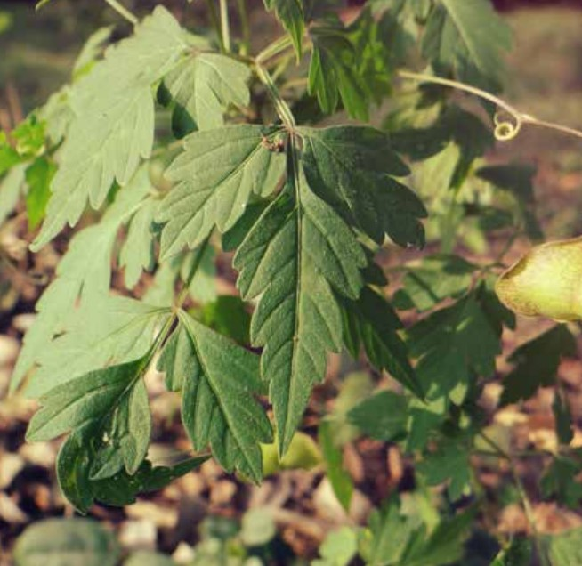

Bude Gida (Balloon Vine)

Scientific name: Cardiospermum halicacabum L.
Usage: Food and medicine
Where to find it: Hedges in open places, disturbed lands
Parts used: Leaves
Habit: Climbing Herb
Description: Small annual climbing herb with slender, smooth branches. The stem is angular, marked with parallel grooves and hairy. Tendrils are leaves that are alternate, broad, trifoliate, with highly lobed leaflets with a toothed margin. Flowers are small in axillary umbels on coiled wiry tendrils. The lowest pedicels are converted into tendrils. Four petals are white and unequal. The fruit is three-angled and inflated, from which the plant gets its common name. The fruit is a brown capsule, thin-shelled, membranous, winged at the angles, containing three black seeds each, with a white heartshaped scar. Inflated capsules and seeds are the characteristic features of this plant.
Nutritional properties:: : Leaves and stem are used to cure common cold, in hair oils and as a dandruff remedy